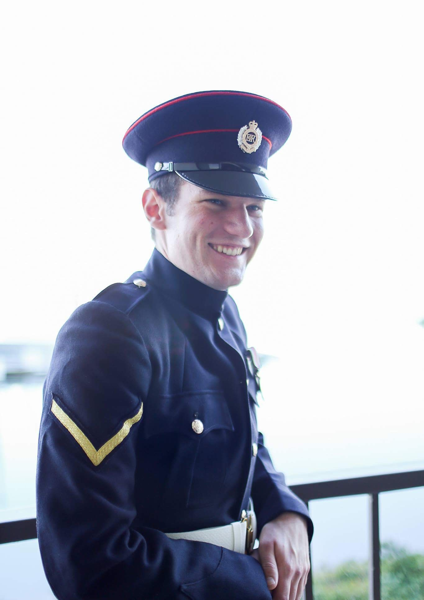
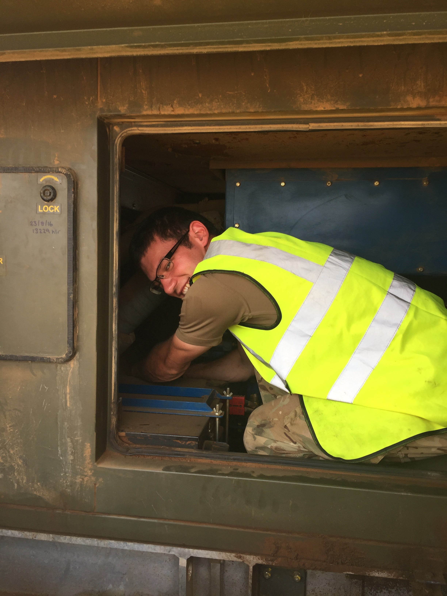
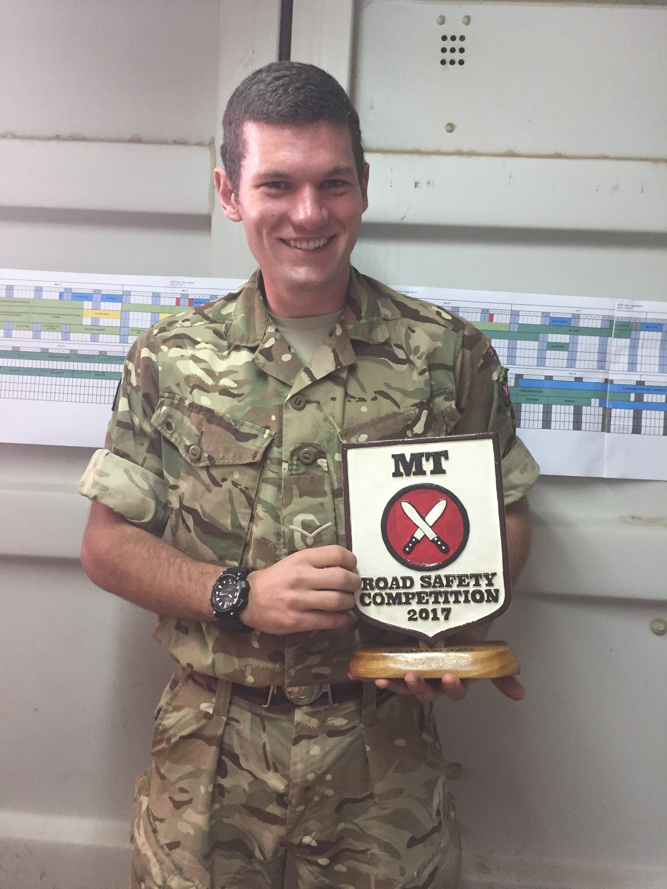
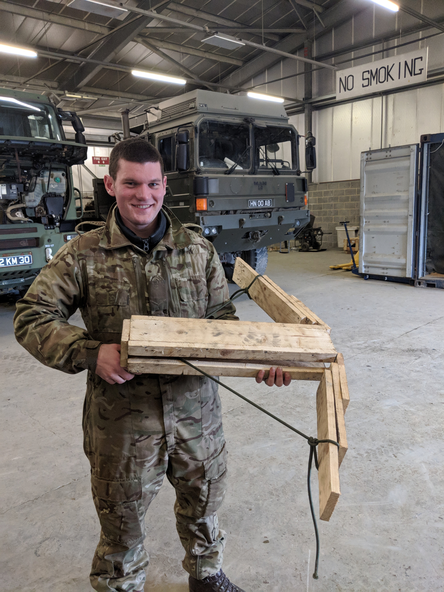

Career Summary
I began my military career at the age of Sixteen joining the Corps of Royal Engineers.
Attending the Army Foundation College, Harrogate and then at the Royal School of Military Engineering (RSME),
Minley and Chatham respectively, completing my phase two training and joining my first unit as a combat engineer
and mechanical fitter. During my time there, I was employed as a section Sapper and mechanical fitter.
I had a chance to learn and develop my technical skills on the ground while gaining vital experience
to further my army career.

After my first few years and successful tours, I returned to the RSME to complete the second part of my trade
training and specialising in the maintenance of the Corps vast arsenal of equipment.
Ranging from the small portable powered tools and generators to the large plant and earth moving machinery.
Gaining and building on a working knowledge of spark ignition and compression ignition engines,
pumps, generators, hydraulics, pneumatics, transmission systems and vehicle electronics.

Upon the completion of my Class 1 training, I was temporarily posted to the
British Army Training Unit Kenya or BATUK for short. There, I was in my first supervisory role in an acting rank.
Leading military and civilian fitters in the maintenance of the largest deployed C Vehicle fleet in the Corps.
Maintaining the fleet in an austere and remote environment with limited support and tight deadlines.
During this time I was deputised for a period of three weeks to fill in the role of my immediate superior,
the senior RE fitter in our department, three levels above my rank at the time. For my efforts I was
awarded a commander's commendation.

Returning to the UK, I was promoted and posted to Kinloss, Scotland.
During this time I was deployed to the Falkland Islands on a Corps wide construction project.
Working within the maintenance element to maintain the plant fleet with limited support in a remote environment
prior to its eventual move back to the UK.
In my last role before discharge, I was overseeing the maintenance of a neglected fleet of deployable generators.
At this time, I was working towards transitioning into civilian life.
Despite this, I didn’t let it impede my professionalism and attitude towards my work, and I managed to
take the fleet from zero to seventy five percent availability before handing over responsibility to my successor
On entering into civilian life, I worked as a Service Manager for Rondean Ltd.
There I was leading a small and dedicated team in the servicing and repair of machine tools for customers
or onward sale. There I relished the opportunity to learn new hands-on skills and the challenge of working
with equipment that was new to me and outside of my comfort zone.
Currently, I am employed as a Management Trainee for Harpers Environmental.